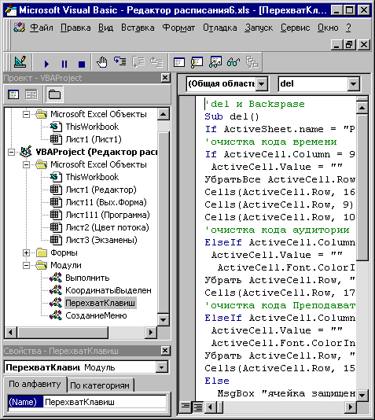

Введение
Проект – Файл приложения Microsoft Office, в котором написана программа VBA
Приложение – Приложение Microsoft Office (Word, Excel, Access, Power Point и др.)
Модуль – Именнованная область в файле проекта содержащая в себе код, написанный на языке VBA
Окно проекта – “дерево” , содержащее на себе все “деревья” загруженных проектов, “дерево” состоит из имен модулей.
Редактор VBA – редактор встроенный внутри приложения, позволяющий писать и редактировать программы на языке VBA.
Для перехода в редактор VBА можно воспользоваться пунктами меню: Сервис-Макросы-Редактор Visual Basic (Рис.1) (В Access выбрать закладку модулей или форм, выбрать мышью нужный объект, зайти в меню: Вид-Программа)
Для открытия окна проекта, необходимо воспользоваться пунктами меню редактора VBA: Вид-Дерево проекта (В Access 1997 его нет)
Двойным кликом мыши по папке с именами модулей можно открыть ее.
Двойным кликом мыши по имени модуля, можно активизировать окно редактора нужного вам модуля.

Рис 1 Редактор VBА(слева дерево проекта, активизирован редактор модуля “ПерехватКлавиш”, который виден в правой части окна VBA)
Примечание: В Access модули можно обрабатывать не заходя в редактор VBA, выбрав закладку Модули. В Access 1997 модули обрабатываются только через закладку Модули, т.к. окна проекта в этой версии Access не существует.
Переименование, Удаление, Создание, Добавление, Экспорт, Импорт модулей проекта
Все указанные в заголовке действия можно выполнить следующим образом:
Импорт и экспорт модуля из проекта в проект
Импорт модуля через экспортируемый файл (а также модулей обычного VB)
Для пересылки модуля из проекта в проект можно воспользоваться следующим приемом:
В редакторе VBA нажать правую клавишу мыши на дереве проекта, на имени файла, и выбрать пункт “Экспорт файла”
Примечание: Экспорт и импорт модуля в Access 1997 осуществляется только через меню Файл, когда выбранна закладка модуля и имя соответствующего модуля.
Импорт модуля через организатор (только для Word приложения)
Редакция модуля
Обработка модулей VBA программно
Под “ИмяПроекта” в программной конструкции подразумевается соответствующий объект. Для связи с книгой Excel предназначен объект - Workbooks("Имя книги"), а для связи с документом Word объект - Documents(“Имя документа”). Объект для связи с документом, который содержит общие макросы приложения Word, имеет имя: NormalTemplate, в Excel приложении данный объект записывается следующим образом: Workbooks("PERSONAL").
Экспорт модуля проекта в файл
ИмяПроекта.VBProject.VBComponents.Item("Имя модуля").Export "Путь и ИмяФайла"
Импорт модуля проекта из файла
ИмяПроекта.VBProject.VBComponents.Import "Путь и ИмяФайла"
Импорт модуля через организатор(данный код только для Word приложения)
Application.OrganizerCopy Source:= _
“Путь и имя проекта откуда берется модуль”, Destination:= _
“Путь и имя проекта куда импортируется модуль”, Name:="Имя модуля", Object _
:=wdOrganizerObjectProjectItems
Вставка новых строк в модуль проекта
ИмяПроекта.VBProject.VBComponents.Item("Имя модуля").CodeModule.InsertLines №, S
Где
№ - Номер строки в модуле с которой будут вставляться новые строки
S – Вставляемая строка символов
Примечание:
В переменной S могут содержаться коды символов конца строк , которые можно получить следующей функцией со следующим аргументом: CHR(13). Таким образом, переменная S может содержать в себе сразу несколько строк:
S = “Первая строка”+ chr(13)+”Вторая строка” + chr(13)+”Третья строка” ‘и т.д.
Удаление строк из модуля
ИмяПроекта..VBProject.VBComponents.Item("Имя модуля").CodeModule.DeleteLines(№,Количество)
Где
№ - Номер строки в модуле с которой будут удаляться строки
Количество – количество удаляемых строк
Чтение строк из модуля
ИмяПроекта.VBProject.VBComponents.Item("Имя модуля").CodeModule.Lines(№,Количество)
Где
№ - Номер строки в модуле с которой будут начинаться чтение строк
Количество – количество читаемых строк
Определение количества строк в модуле
ИмяПроекта.VBProject.VBComponents.Item("Имя модуля").CodeModule.CountOfLines
Переименование модулей проекта
ИмяПроекта.VBProject.VBComponents.Item(“ИмяМодуля”).Name =”Новое имя модуля”
Удаление модулей проекта
ИмяПроекта.VBProject.VBComponents.Remove _
ИмяПроекта.VBProject.VBComponents.Item("ИмяМодуля")
Определение количества модулей в проекте
ИмяПроекта.VBProject.VBComponents.Count
Создание нового модуля проекта
‘Создаем новый модуль макросов и подпрограмм
ИмяПроекта.VBProject.VBComponents.Add vbext_ct_StdModule
‘Определяем индекс созданного модуля
k = ИмяПроекта.VBProject.VBComponents.Count
‘даем свое имя модулю
ИмяПроекта.VBProject.VBComponents.Item(k).Name = "Новое имя модуля"